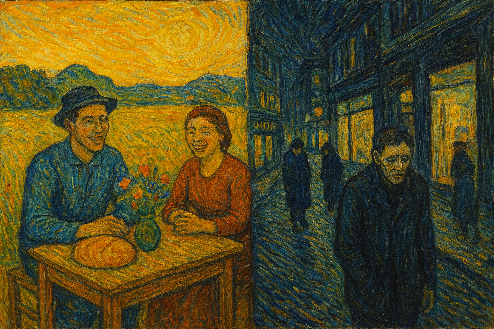

It was a Saturday afternoon, the sun was hanging heavy like a brass plate over the dusty main road. I was on my way to catch a film with my friends along with an old friend - someone I knew from childhood, who also happened to be the son of a famous textile company owner. Almost everyone in my neighbourhood had whispered about how much their family was worth. Six, seven or maybe several crores. Enough to make anyone expect imported cars, glossy sneakers, and an air of untouchable pride, show - off attitude.
But when he walked up to meet everyone outside the theatre, he wasn’t wrapped in any of that. He wore a faded cricket jersey, the kind you pull out of your cupboard on autopilot, paired with simple track pants for being comfortable. No branded shoes, no gold watch. He chatted like the boy next door. Later that evening, as we cycled past his house, I saw him again - this time on the street, handing out a stainless steel container of fresh milk from their own cows, a routine his family had quietly kept for years.
In Tiruppur, that humility was not something rare. You would often see the wealthiest mill owners sipping tea in a glass tumbler at the same roadside stall as their workers, or driving around in a dusty Ambassador instead of a brand-new SUV. The pride wasn’t in what they bought, but in what they built - businesses, routines, traditions that carried the weight of family and community
As someone who grew-up in and around Tiruppur, I could definitely say that there’s something beautiful about that restraint, not because I’ve been there, but because I’ve seen it all through my life. That quiet refusal to let money dictate the presence. It wasn’t frugality out of necessity, it was a choice. A belief that respect doesn’t come from what you show-off, but from how you live.
I think about that often, especially when I scroll through LinkedIn and see the endless parade of announcements - certificates, promotions, gadgets, cars, all (b)posted like important achievement. I don’t mean to dismiss celebration: wins deserve to be shared. But sometimes, the eagerness to disclose feels louder than the achievement itself.
And maybe that’s the lesson. True success doesn’t need a spotlight. It shows itself in the way we treat people, in the rituals we uphold, in the small, unglamorous ways we give back.
In a world obsessed with showing, maybe the real power lies in not showing off. Not because humility is “old-fashioned,” but because it is timeless.
Thank You for Reading